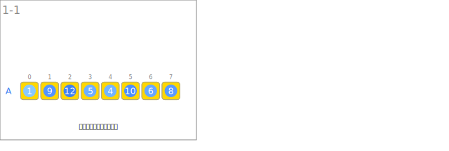
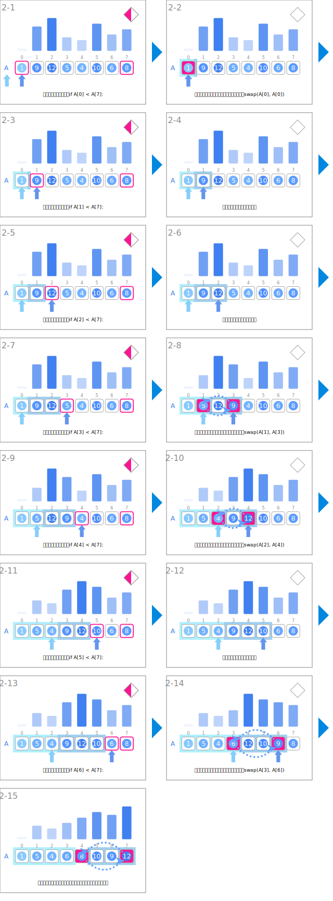
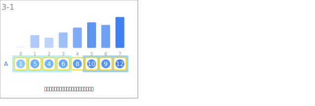

シンボル
| データ | ||
|---|---|---|
 | 整数の列 | A |
| 入力 | ||
|---|---|---|
 | 整数の列を読み込みます。 | |
| 分割 | ||
 | 基準値と比較します。 | if A[j] < A[r]: |
 | 大きいグループの先頭とスワップします。 | swap(A[i], A[j]) |
| 基準より小さい要素を含むグループを拡張していきます。 | 区間[l, i] | |
 | 基準より大きい要素を含むグループを拡張していきます。 | 区間[i+1, j] |
 | 基準より小さい要素を含むグループの右端を指します。 | i |
| 基準より大きい要素を含むグループの右端を指します。 | j | |
| 出力 | ||
 | グループ分けされた整数の列を出力します。 | |
アニメーション
入力

分割

出力
